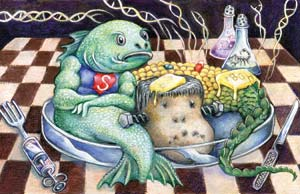

The recent spike in food prices, as well as concerns about what the future may hold, are weighing on the minds of people across the globe. The biotech industry is exploiting such worries and claiming, contrary to evidence, that genetically engineered (GE) crops must be accepted to help the world feed itself. The industry hopes to use these scare tactics to expand into the many countries, especially in Europe and the East, that have wisely rejected GE foods because their human health and environmental safety have not yet been assessed.
After 20 years of research and 13 years of commercialization, GE crops have a track record that allows us to evaluate their performance. So far, there has been little progress in achieving important goals such as increased yields, better stress (drought) tolerance and improved sustainability in the form of decreased need for fertilizers, tilling and pesticides. Moreover, food safety and environmental risks from genetic engineering also remain to be addressed.
The most widely grown genetically engineered crop in the United States, herbicide-tolerant soybeans, has not increased yield above its conventional counterparts, based on U.S. Department of Agriculture (USDA) trend data and numerous field studies. Insect-resistant GE crops have sometimes indirectly improved yields, but such yield increases have been modest, and recent studies suggest that much of the apparent improvements may instead be due to advances in conventional breeding. New insights from our growing knowledge of crop genetics are improving these conventional breeding techniques - without genetic engineering.
What about environmental benefits? Those, too, have been modest at best. Overall pesticide use (herbicides, insecticides and fungicides) has not been reduced through genetic engineering. In fact, some weeds have developed a resistance to the herbicide used with GE crops, which forces greater overall herbicide use and cancels out the decreased insecticide use from insect-resistant GE crops.
In many cases we can accomplish the same or better results at less expense by applying the science of agroecology. Insecticide use can be reduced by increased crop rotation. Soil erosion and degradation can be reduced by planting cover crops between seasons and decreasing tillage. These and other practices improve soil condition, which thereby retains more water, helping crops through droughts. Many of these issues are discussed in a recently published report from the International Assessment of Agricultural Knowledge, Science and Technology for Development, an organization sponsored by the World Bank and The United Nations.
Finally, to the extent that genetic engineering may provide benefits in the future, it must be adequately regulated to ensure food safety and protect the environment. Unfortunately, the U.S. Food and Drug Administration has only a voluntary regulatory process for GE food safety, and the USDA was criticized in 2002 by the National Academy of Sciences for insufficient scientific rigor in its environmental safety assessments. Its own inspector general severely criticized its regulatory apparatus in 2005. The USDA is revising its regulations, but current drafts do not adequately address previous criticisms.
So far the claims of the biotechnology industry are not backed up by scientific evidence; its rosy rhetoric obscures our choices. This can keep us from investing in tools such as conventional breeding and agroecology that, based on their track record, should be leading the way to helping the world feed itself.
These common-sense techniques are all proven ways to improve food production. Who needs controversial genetic engineering?
|
 DAVE CHANNON Biotech companies tell us that genetic engineering will provide insurance against growing demands on our food supply, but scary questions remain. |
|
|